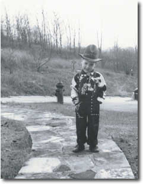

|
 Michael Karl (Ritchie) is an Associate Professor of English at Arkansas Tech University, where he advises the student literary magazine, Nebo. At the University of Iowa Writers Workshop, Mark Strand once said to him, "I'm sorry, but there just isn't enough roooooom for all of you." As a member of the billions of "disappeared" poets, Michael Karl prefers writing only for close friends whose e-mail addresses he has. His previous three small-press collections of poetry, For Those in the Know, Night Blindness, and Closing Down the Hearth have mercifully all gone out of print. Given how much he now understands about living on this planet, he welcomes the silence -- oblivion's soul-kiss. |